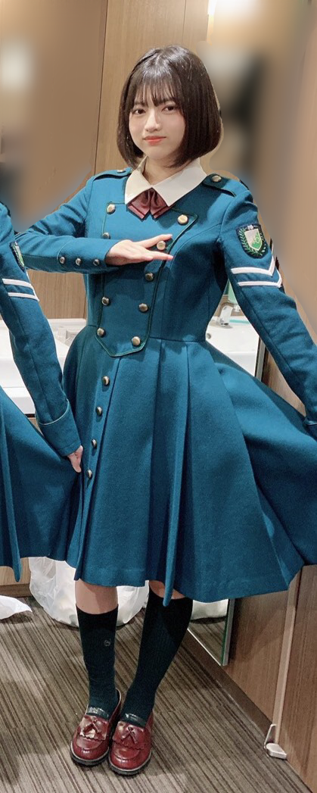
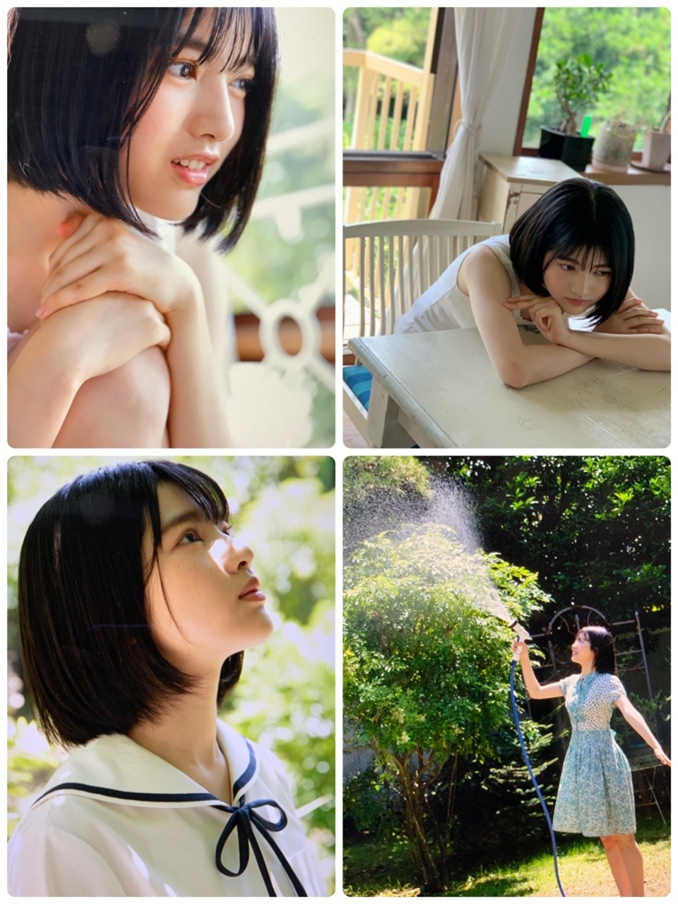
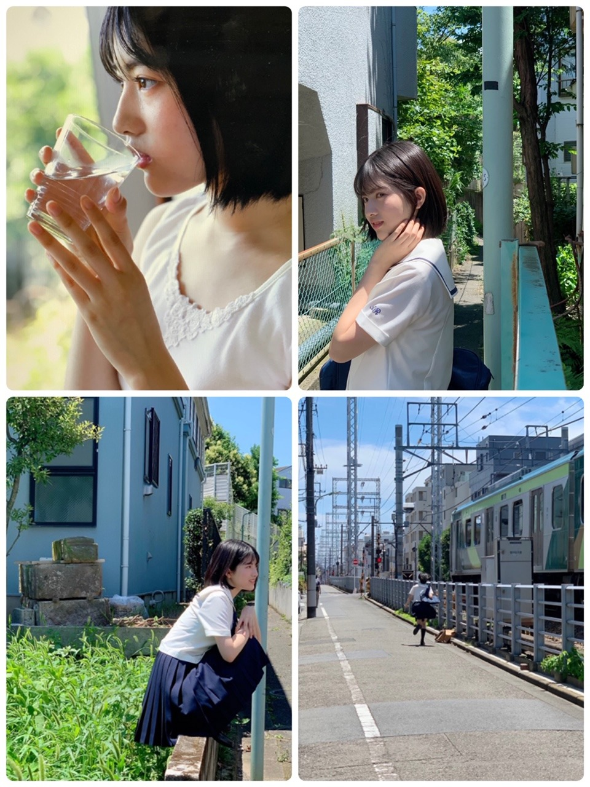

2020/0728Tueお疲れ様です。欅坂46の林瑠奈ではありませんが、林瑠奈ではあります。
本日もお疲れ様です。
乃木坂46(新)4期生の林瑠奈です。
神奈川県高校2年生16歳
華咲くシックスティーンの林瑠奈です。
負けるなしょげるな林瑠奈、今日も1日頑張るな
(ピンポーン)
乃木坂46(新)4期生の林瑠奈です。
神奈川県高校2年生16歳
華咲くシックスティーンの林瑠奈です。
負けるなしょげるな林瑠奈、今日も1日頑張るな
(ピンポーン)
19周目となりました、ブログリレー。

隣には増本綺良と幸阪茉里乃がいますが、切り取れと言われたのでしっかり切りました。
キラのナカマです。
...........................................................................
"あぁ、懐かしい"
音楽におけるプルースト効果。
研修生ツアーを思い出したOverture。
空を跳べてしまいそうな程の鳥肌。
色、感情、匂い、感触。
わたしの頭の中にある"欅坂46"が呼び起こされる。
それは、階段の踊り場からいきなり人が出てくるみたいに偶然的で
何が起こるかなんてわかっているはずなのに驚いてしまう。
驚かされてしまう。
素手で臓器を握られるような衝撃に景色が揺らぐ。
欅坂46が大好きだと思う。
自分は自分のままでいいとそう思えるきっかけを貰った。
自分より下手くそな人を見つけようとして、
自分はまだ大丈夫だと、意味のない理由を求めて
荒んだ心に嫌気がさして、
自分が壊れてしまう前に、消えてしまう前に、先回りして感情を殺す術を身につけた。
そんな昔の自分。
自分がわからなくなってしまった可哀想な昔の自分。
"君は君らしく"
無理に変わる必要はないと、そのままでいいと、
そのメッセージがわたしを変えた。
7月16日
「KEYAKIZAKA46 Live Online, but with YOU!」を見させていただきました。
下校中、開演時間に間に合うための手順をひたすら頭に浮かべながら電車に揺られ、
競歩+全力疾走でなんとか間に合えました。
わたしが個人的に大好きな曲である『太陽は見上げる人を選ばない』から始まり、間奏のところで新2期生のみんなが出てきたとき、
わたしの顔は涙ちょろちょろから号泣に変わってもうあかんです。
自己紹介のところもみんなが緊張しているのがこちらにも伝わって、何故かわたしまで緊張していたのですが、増本綺良だけ制服のリボンが暴れていて笑ってしまいました。
欅坂46からの改名、新グループとして活動されると聞いて、今までありがとうございましたの想いが今溢れに溢れています。
最後の28人全員でのパフォーマンスは歌詞は響くし、みんな頑張ったんだろうなという新2期生の姿も感動するし、メンバーさんの表情を見てさらに感動が大きくなって、もう感情の暴走が過ぎます。
これからも応援します。本当に素敵な時間を過ごさせていただきました。
...........................................................................
7月22日に発売されました、与田祐希さん表紙、
掛橋沙耶香ちゃん裏表紙のアップトゥボーイさんに
林瑠奈を掲載していただいています。
以下オフショットです。


今回撮影していただいて、初めて学生鞄(ん？スクールバッグ？)を持ちました。
リアルな制服っぽいセーラー服も着させていただき、別の世界線にいる林瑠奈を体験できたので嬉しかったです。
庭に水撒くやつも家だったら絶対ブチギレられるので、貴重な経験となりました。
アップトゥボーイさん、ありがとうございました！
とても楽しかったです。
P.S.さやかちゃんが可愛すぎます。好きです。
...........................................................................
一昨日、7月26日。
山下美月さん、お誕生日おめでとうございます！！
昨日の佐藤璃果ブログと被るのですが、
山下さん、本当に『美』です。
圧倒的美、『美』という言葉を濾過して煮詰めてを繰り返すと山下さんになるのだと、わたしは本気で思っています。
強火山下美月さん推しの友達が本人不在パーティーの様子を写真で送ってくれたので、わたしも林瑠奈の中から全力参加しました。
素敵な一年になりますよう、お祈りしています。
本当におめでとうございます！！
P.S.『佐藤璃果』を辞書登録したので、
佐藤+璃(ここでめっちゃ探す)+果実-実をしなくても楽々と変換に出ます。
みなさんも登録しましょう、しなさい。
...........................................................................
昨日、りかから
「久保さんが好きすぎてやばいです」
とボイスメッセージがきました。
共感の嵐ですね。
堀さんが好きすぎてやばいです。
歌番組で拝見する度に好きが積もりますし、日常のあらゆることを堀さんに結びつけてしまいます。
『好き』という言葉では表し切れないほどです。
わたしには堀さんの魅力を形容できる術がありません。
だから、どなたか堀さんのことを言語化してくれませんか。
その言葉を聴くだけで生きていける気がするから。
...........................................................................
『やっぱりあの時が一番だった』
恐らく、前からわたしのことをご存知の方は思ってらっしゃる方多いのではないかと思います。
以下、独り言なので聞かなくても大丈夫です。
わたしだって変わります。
自分を第三者として見ていなくても変わったと思うほどですから。
そりゃ前の方が良かったと思うかもしれないですよ？
変わらなくてよかったのにと。
でもそれって林瑠奈として何も成長してないことと同じじゃないですか？
無理に変えたわけでも、取り繕っているわけでもない。
ただわたし自身が勝手に変わっただけです。
だから、変わって"しまった"じゃなくて
"成長した"と自分の変化を認めてもらえるように
良い意味で変わり続ける人になれるよう
これからも精一杯頑張ります。
...........................................................................
さて、明日はミュウちゃんです。
みゆちゃん、
さっき送ってくれた絵文字ちょっと意味わからんくてなんとなくで返したんやけど合ってた？
7月30日発売の月刊エンタメさんに林瑠奈を掲載していただきます。
表紙はかきちゃんです。かきちゃん可愛い好き。
良かったらチェックしてください。
アディオス！！！！！
2020/07/28 19:06

PROFILE
新4期生リレー
202104
| SUN | MON | TUE | WED | THU | FRI | SAT |
|---|---|---|---|---|---|---|
| 1 | 2 | 3 | ||||
| 4 | 5 | 6 | 7 | 8 | 9 | 10 |
| 11 | 12 | 13 | 14 | 15 | 16 | 17 |
| 18 | 19 | 20 | 21 | 22 | 23 | 24 |
| 25 | 26 | 27 | 28 | 29 | 30 | |

コメント(317)
アップトゥボーイ買ったど〜〜
制服もパジャマ？も可愛かった！
サインチェキ当たることを願ってる！！
またブログ待ってるね〜
アディオス！！
文章の選び方にセンスを感じます！
いつまでもそのままで♪
日々面白いのでどんどん変わっていって欲しい。
変わらないものはそこそこに。
応援してます！頑張って〜
コメント書き終えたら今すぐ辞書登録してきます。るなぴもしっかりとしてきます！今日のオフショットの写真が好きすぎてたまりません笑笑
欅坂がどうなろうと応援するようにるなぴもいくら変わろうが応援し続けるしるなぴがどう変ろうとも応援します！
質問！
好きなお寿司はなんですか？
これからも頑張ってください！
見た目がクールビューティーだからかな？
今日、るなぴのブログ更新の日だ〜
って思ったので「負けるな しょげるな 林瑠奈
今日も1日 頑張るな」って言ってたんですよ(いつもやんw)
そしたら、数少ない私の友達が覚えて一緒に
言ってくれたんです✨なのでるなぴ推しになったそうです！
オフショありがとう
私から一言。林さんが好きすぎてやばいです
次まで待ってるね〜！
でも、乃木坂46で良かった。
ブログ更新ありがとう
綺良ちゃんもまりのちゃんもかわいいよね
研修生ツアーは2日とも行ったけど、
めちゃめちゃ楽しかったよ…
こうして、乃木坂に入ってきてくれた5人、
一緒に頑張れた研修生の皆とは、最高の仲間だね
これからも、新4期生の皆を応援していくよ！
頑張ってね！ ！
また来るね by しゅん
U.T.Bばっちり確認しました、どの写真も
素晴らしくて何度も見返してます！
るなぴの文章はいつも引き込まれます。。
30日発売の月刊エンタメも楽しみです！！
チャオ(｀□´)
乃木坂スキッツも拝見しました！どんどん林さんにハマってます！
握手会が出来るようになったらいきます！
欅坂の曲から伝わるメッセージ的なものにはすごい勇気付けられ自分自身が迷った時とかにも心にガツンとくるものがあり、そういったことがあったからこそ今のるなちゃんがいるということに感謝です
次回のブログも楽しみに待ってます∫∫∫
るなぴが泣いてるところを見てみたいと思いました。
きっと綺麗なんだろうな。
そんじゃ今回はこんぐらいになります。
アディオス！！アディオス！！！
(大事なので2回言いました。梅雨明け。晴々。ふふ。)
欅さんの曲は、自分のストレスになってるところとか、
自分の弱い心の部分を補ってくれるから
僕も大好きです。
アップトゥーボーイ、書店で見つからなかったので、
また徒歩で探してみます、、、とほほ、、。徒歩ほ、、。
オフショ、スクールバッグも、
セーラー服もtheJKって感じでいいですね！！
美の中の水分を弾いて山下美月さんにするの
好きです笑
マジで驚くほど美人やんな笑笑
PSのクセがすごいんじゃ〜
変化しないとこは、もしかすると
人間にとって退化なのかも知れませんね、、。
僕も常に新しい経験を自分に重ねていって、
るなぴとみたいな「オンリーワンな人」になりたいです。
じゃ、アディオス！！！
つばさ
サイマジョの制服似合い過ぎてる。。。研修生ライブが懐かしいなぁ。またあのメンバーでのライブ見たい気もするなぁ。今日も1日お疲れ様！！
何言ってんだこいつ。と思いますよね。私も何を言っているのか分かりませんが、とりあえず宇宙を感じたください。
そうすれば何か見えてくるはずです。
ほな、さいなら
レギュラーのネタめっちゃ面白かったよ！
関西弁が効いてたねー！
雑誌の特典でポスターついてくるってほんとですか！！！
買って飾ってもいいのかな！！！？
嬉しい…嬉しい…ﾌﾌﾌ
璃果は予測変換で出てくるように工夫したよ(｀･ω･´)
はじめから終わりまで思いの溢れたブログありがとう、るなぴの成長楽しみにしてます(^^)
負けるな。
るなぴー＼(^o^)／お疲れさまでした
もうすぐ20周目か？
今日は長い？いや、右のスクロールバーを見ると全然長くないよ＼(^o^)／
とりあえず全部読もうと思うよ＼(^o^)／
可哀想な昔の自分はもう居ないでしょう？
まさにそうよ、自分は自分だよ！(ง ꙭ)ง
またいつか皆と会えたらいいよね
アップトゥボーイのるなぴーめちゃ可愛いよ(*´ω｀*)♡
沢山のオフショットありがとう＼(^o^)／
さやかちゃんへの愛情、本人に届けるように(｡>﹏<｡)（笑）
濾過して煮詰めて（笑）もー、やっぱりるなぴー面白いなあ
でもこの独特な表現って、実は美月と結構似てると思うよ
きっと仲良くなれるから、もっと仲良くなれる機会があれば良いなあ＼(^o^)／
大丈夫、乃木坂メンバーの名前は基本的に全員登録しているよ＼(^o^)／
しおりや未央奈ちゃんに、お二人のボイスメッセージを聞かせてあげてほしいなあ（笑）
独り言なので、あまり触れないけど
確かに「変わった」より「成長した」という表現は良いかもしれない(*´ω｀*)
結局皆はそうだよね(｡>﹏<｡)
ミュウの絵文字気になるなあ(*´ω｀*)（笑）
おー、エンタメさんも楽しみ＼(^o^)／
これからも頑張って(/･ω･)/
なんか今回は文学的な文が多かったですね！
なんか、言葉にはできないけどよかったです！胸に染みました！自分が言われている気がして自分も自分でいようって思いました！
アップトゥーボーイめちゃめちゃ可愛かったです！オフショットも最高！さらに可愛くなりました！？ノギザカスキッツもクオリティ高くて流石でした！
ノギザカスキッツこれからも楽しみにしてます！
でははははははわわわわわ……………凪
メンバー紹介回が終わってタイトルどうくるかな〜って思ってたら今回も一瞬あれ？ってなりました笑
綺良ちゃんとのコンビ結構好きなんだ〜、最近のエピソードとかあったら聞きたいな
研修生ツアー、ホント良い思い出。今でもキラキラしてるステージを思い出すよ〜
欅坂の配信ライブ、自分も見たけどライブでのファンに訴えかける力がすごかったねやっぱ。
アップトゥボーイ、るなぴ全ページ可愛くてポスターも可愛くて幸せの一冊だった笑
人の名前を辞書登録すると便利よね〜
るなぴは「あの時」も一番だし「今」も一番よ。
どの瞬間を切り取っても全部素敵だし番組やブログや雑誌で見るたびに変わるるなぴが好きよ〜
そっか、やっぱそういった意見もあるよね。
自分はるなぴが楽しく活動できるのが一番だと思ってるし、これからも活動するるなぴを応援するよ〜
月刊エンタメ、ツイートの写真見たけど今からもう楽しみだよ！
次のブログも楽しみにしてるね〜
サイマジョの衣装着てるるなぴかわいすぎです
隣にどろちゃんとさんごちゃんが写ってるなんて…！ぜひそのまま載せて欲しかったです
アップトゥボーイのオフショ待ってました！！！ありがたやありがたや
個人的には庭に水を撒いてる時のるなぴがとても生き生きしてて雑誌を読んでるこっちも楽しい気持ちになります
るなぴの友達もづっきーのこととっても好きなんですね！！私も推しメンの誕生日は本気でお祝いします
月刊エンタメの表紙見ました！！かっきーかわいい…
もちろん買います。部屋にポスター貼ります
アディオス！！！！！
るなぴベシャリがプロッ！
白目もプロッ！
片山 晋呉プロッ！！
ｺﾞﾙﾌｧｰ(oﾟ∀ﾟ)=○
堀さんは私も大好きです。不思議な魅力があって惹かれます。
こういう長いブログでも体裁整っていて分かりやすい文章でした！
瑠奈さんは頭がいいんだと思います。今後も応援させてもらいます(^^)
うん、いい。
私も欅坂46のLIVE配信見ました。鳥肌立ちまくりました。 本当です。
皆さん頑張ってましたね！ 胸に迫るものがありました。 これからも応援しようと思います
サイマジョ衣装似合ってます！私もたくさん欅坂46さんの曲に救われてきました。
るなぴ垢抜けるの早いね！ 可愛い(o^―^o)
オフショットアリガトウ。
今月は山下美月さんの誕生日ですね(*'ω'*)【しーちゃんも】
まさしく「美」ですね
堀さんの事を言語化しようと思います。
えーっと．．．
分からない!!!!!!!
愛媛県在住 中３女子 音より
追伸：長くなってごめん（>_<)
璃果ちゃん登録しときます。
実は私、もともと欅坂のファンで、、涙が出そうになりました。
坂道研修生の子達が気になって見てみたら 瑠奈ちゃんにハートを撃ち抜かれて、こうして乃木坂のファンもしてます;_;
サイマジョ衣装の瑠奈ちゃんが大大大好きで、、、
もっと欅坂の衣装を着てる瑠奈ちゃんも見てみたい！とも思うけど、
素敵な乃木坂という場所で活躍してる瑠奈ちゃんも本当に本当に大好きで、とにかく応援できて幸せです(TT)
どんな瑠奈ちゃんでも大好き！常に可愛いを更新し続けてて推しててハッピーです
いつもありがとうございます！
アップトゥボーイ買いました！！セブンネットで買ったから瑠奈ちゃんのポストカード特典で届いて幸せだった〜︎︎☺︎
月刊エンタメももちろん買います！！楽しみ
またブログ楽しみに待ってます！
アディオス！！
欅坂46改名は驚いたけど欅坂46として残してくれた楽曲にはホント思い入れがあって初めて買ったCDは欅坂46なんだよね。でもこれから改名してもまた頑張って欲しいって思う！
それと、昔の方がよかったって言うのは自分は言われたら悔しいな。今の自分が悪いみたいで。だから今の自分をもっとより良くしていかないと！って思ってる！
以上です！
アディオス！
それをみて元気もらってます！
単独ポスターとかでるの楽しみにしてます！
体に気をつけて頑張ってください！
変わるっていうのは良い意味でもそうでない方でも捉えられるもんね
変化することって本人だけじゃなく周りにも影響があるし、すごいことなんだね
感動しております
欅坂さんの事を書いてくださりありがとうございます。
グループは違いますが瑠奈ちゃんの想い聞けて
欅坂のオタクもしている私はとても嬉しくなりました。
今回瑠奈ちゃんが載っていた雑誌購入しました。
とても可愛くて高校生らしい表情の写真もあって
素敵と思っていました。次のブログも楽しみにしています。
瑠奈ちゃんも欅坂のライブ観てたんですね！俺も観てました。やっぱり欅坂のパフォーマンス、世界観はどのグループにも真似できない、欅坂にしか出せないものなんだなと感じました。俺は欅坂も大好きですし、歌にパワーをたくさんもらいました。サイレントマジョリティーから黒い羊まで、どの楽曲にも主人公がいて、その主人公はいろいろな感情を持っています。そしてだいたい変わり者です。ただそれを「変わらなくていい」と、あの歌詞を通して何度も言ってくれました。すごく勇気づけられました。改名しても欅坂の楽曲は消えませんし、あのパフォーマンスは忘れないです。改名後も応援するしかないですね。
アップトゥボーイ買いました！瑠奈ちゃんのグラビアかわいかったです！こんな子が周りにいたらなぁと読みながら思いました笑
さっきの欅坂の話と関係しますが、「変えさせられる」のではなくて、自らが望んで「変わる」のは素晴らしいことだと思います。ただでさえ「変わる」のは勇気がいることです。それを周りに流されるのではなく自分の意思で行うんですからすごいです。そして瑠奈ちゃんが言う通りそれが成長につながりますし、どんどん人としての魅力が増していくと思ってます。俺は成長し続ける瑠奈ちゃんを応援してます！
かつひこ
巡り合わせが違えば今頃欅坂にいたかもしれないって思うと不思議だね
どこが正解とかはないだろうけど欅坂でのもやしちゃんも見てみたかったかも…(笑)
ノギザカスキッツ見たよ！！
モノマネかと思ったら普通に面白かった(笑)
次はガチのオリジナルネタ見てみたいです(笑)
どんどん個性爆発させててすごいね(笑)
これから活躍にも期待してます！！
るなぴが成長して、色んな面で変わったのは、ブログや雑誌、ノギザカスキッツなど色んな所で実感しています
それを変わってしまった、前のるなぴではないって言う人は少なからずいるかもしれませんが、ずっと推して、見続けている人はそんなことを絶対に思いません！
るなぴは周りの意見に流されず自分の正しいと思う道を突き進んでください！付いていきます！
アップトゥボーイ見ました！
るなぴも可愛くて、美しいです！また色んな顔を見せてください！
そしてノギザカスキッツも見ました！あの場面で自分でアドリブ入れて、自分の良さを自分で出せているのがるなぴの好きなとこだし、大好きです
アディオス！
じっくり読んでからまたコメントします。
コメントする